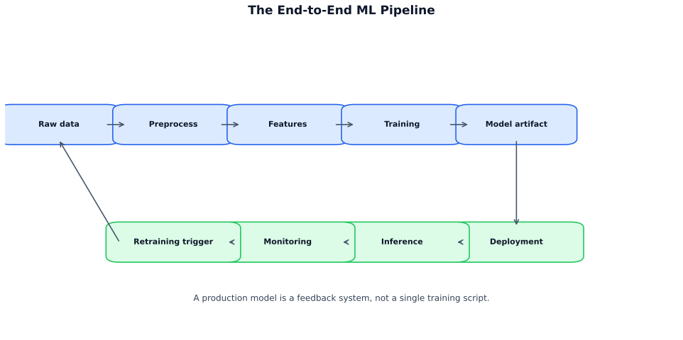

A trained model is a research artifact. A production model is one that can be deployed, monitored, and retrained when the world changes. MLOps is the discipline of bridging that gap.
The core insight: ML usually breaks in the system, not in the model. Preprocessing mismatches, stale features, silent drift, and broken pipelines cause far more production failures than weak algorithms do. This chapter covers the full lifecycle: drift detection, end-to-end pipelines, experiment tracking, deployment patterns, feature stores, CI/CD for ML, and champion/challenger rollout strategies.
What you will learn:
| Section | Topic |
|---|---|
| 16.1 | Why MLOps? The drift problem |
| 16.2 | The end-to-end ML pipeline |
| 16.3 | Experiment tracking and model registry |
| 16.4 | Deployment patterns |
| 16.5 | Feature stores and train-serve parity |
| 16.6 | CI/CD and retraining triggers |
| 16.7 | Champion/challenger and rollback |
Prerequisites: Supervised learning (Chapter 5), model evaluation (Chapter 7), basic Python (Chapter 3).
A deployed model is frozen. The world it was trained on keeps changing. This gap is called drift, and it is the single most important reason MLOps exists.
Measuring drift — Population Stability Index (PSI):
\[\text{PSI} = \sum_i \left( p_{\text{expected},i} - p_{\text{actual},i} \right) \ln\!\left( \frac{p_{\text{expected},i}}{p_{\text{actual},i}} \right)\]
Where: \(p_{\text{expected},i}\) = proportion in bin \(i\) for the reference (training) distribution, \(p_{\text{actual},i}\) = proportion for the current (production) distribution.
| PSI value | Interpretation |
|---|---|
| < 0.1 | Minimal shift — model should still be reliable |
| 0.1 – 0.2 | Moderate shift — investigate |
| > 0.2 | Significant shift — likely needs retraining |
Every deployed ML system is a pipeline. The model is just one stage of it.

Common pipeline failure points:
| Failure | Root cause | Prevention |
|---|---|---|
| Training/serving mismatch | Different preprocessing code paths | Feature store or shared library |
| Data drift | Input distribution changes | Statistical monitoring (PSI) |
| Concept drift | Feature-label relationship changes | Monitor model output + business metrics |
| Stale features | Feature pipeline not refreshing | Pipeline SLAs and freshness checks |
| Schema change | Upstream data schema evolved | Schema validation at ingestion |
Experiment tracking is version control for model training. For every run, log: hyperparameters, validation metrics, dataset version, git commit, and model artifact. Without it, you cannot reproduce your best model or understand why one run outperformed another. Tools: MLflow (most common), Weights & Biases, Neptune.
Model registry is the handoff point between training and serving. A model registered here has been evaluated and approved for deployment. Every version tracks its lifecycle stage:
Key: Always keep the previous production version warm in the registry. Fast rollback is what separates a 10-minute recovery from a 4-hour incident.
Deployment strategy determines how risk is managed during the transition from an old model to a new one.
Key: For high-stakes models (fraud, pricing, medical), always use canary or shadow before full rollout. Never do direct cutover without a tested rollback plan.
The most insidious production failure is train-serve skew: the model was trained on features computed one way, but production computes them differently. A feature store solves this by centralizing feature computation — the same transformation logic is used for both offline training and online serving.
Key principle: Write feature computation once as a shared library. Use the offline store to build training datasets. Use the online store (e.g., Redis) to serve features at prediction time. Validate that offline and online values match. Tools: Feast (open-source), Tecton, Hopsworks.
Key: If you compute features differently in training and serving, your model is being tested on one distribution and deployed on another. The results will disappoint.
ML CI/CD is like software CI/CD, but the definition of “change” is broader: a code change, a data change, or a model change can each trigger the pipeline.
Quality gates that must pass before any model reaches production:
When to retrain:
| Trigger | When to use |
|---|---|
| Scheduled | Low-risk models; predictable drift (weekly, monthly) |
| Performance-based | Metric drops below threshold on labeled window |
| Distribution-based | PSI exceeds threshold on key features |
| Event-based | Known external event (market shock, product launch) |
Key: Monitoring without action is just logging. Define thresholds and automation for what happens when they are breached.
Champion/challenger is a controlled comparison of your current production model (champion) against a candidate replacement (challenger). Route 5% of traffic to the challenger, compare metrics over 7–14 days, and promote only if the improvement is statistically significant and translates to business impact.
Rollback checklist when an alert fires:
Key: A rollback plan must be rehearsed, not improvised. Run game-day simulations before an incident happens in production.
The minimum viable MLOps stack:
| Component | What it does | Tools |
|---|---|---|
| Experiment tracking | Log params, metrics, artifacts per run | MLflow, W&B, Neptune |
| Model registry | Version models, lifecycle stages, rollback | MLflow, built-in platform registries |
| Feature store | Shared feature logic for train and serve | Feast, Tecton, Hopsworks |
| CI/CD pipeline | Automated testing + deployment with quality gates | GitHub Actions, Jenkins, Argo |
| Monitoring | Drift detection, performance alerts | Evidently, WhyLabs, custom PSI jobs |
What kills production ML:
A. Deployment is the process of packaging a trained model and placing it in an environment where it can receive requests — containerizing, setting up endpoints, configuring infrastructure. Serving is the runtime act of accepting input data, running inference, and returning predictions. A model can be deployed but not yet serving (e.g., staged behind a feature flag). In practice, deployment also includes health checks, autoscaling configuration, and CI/CD integration.
A. Data drift (covariate shift) means the distribution of input features has changed — e.g., user demographics shift after a marketing campaign. Concept drift means the relationship between inputs and the target has changed — e.g., "what constitutes fraud" evolves. Detect data drift with statistical tests on feature distributions (PSI, KS test, Jensen-Shannon divergence). Detect concept drift by monitoring prediction performance metrics (accuracy, F1) over time — if inputs look the same but performance drops, the concept has drifted.
A. The champion is the current production model. A challenger is a new candidate model that receives a small fraction of live traffic (e.g., 5-10%). You compare their performance on real data over a set period. If the challenger statistically outperforms the champion, you promote it. This is safer than a hard cutover because you limit blast radius, and you evaluate on real — not just historical — data. Always define success criteria and a rollback plan before starting.
A. A feature store is a centralized system that manages feature computation, storage, and serving for ML models. It solves train-serve skew by ensuring the exact same feature logic runs in both training pipelines and real-time serving. It also enables feature reuse across teams, provides point-in-time correctness for historical features, and maintains a catalog of documented, versioned features. Examples include Feast (open source), Tecton, and platform-native stores in Vertex AI and SageMaker.
A. Common triggers: (1) performance degradation detected via monitoring (accuracy/F1/AUC drops below threshold), (2) data drift detected (PSI > 0.2 or KS test p-value < 0.05), (3) scheduled cadence (weekly/monthly) based on domain knowledge of how fast the world changes, (4) upstream data schema changes. Avoid retraining on a fixed schedule alone — combine scheduled checks with drift-triggered retraining. Always validate the new model against the current champion before promoting.
A. Train-serve skew occurs when features computed at training time differ from those computed at inference time — different code paths, different libraries, or timing differences (e.g., using future data during training). Prevention strategies: use a feature store with shared feature definitions, log serving-time features and compare distributions to training features, write feature transformations once and use them in both pipelines, and run integration tests that verify feature parity end-to-end.
A. Blue-green maintains two identical environments: "blue" runs the current model, "green" runs the new one. You switch all traffic at once by flipping a load balancer — fast rollback by switching back. Canary deployment gradually shifts traffic: start with 1-5% on the new model, monitor metrics, and increase incrementally. Canary is preferred for ML because model failures are often subtle (degraded accuracy, not crashes) and only visible under real traffic distribution.
A. Three layers: (1) Infrastructure — latency (p50/p99), throughput, error rates, CPU/memory usage. (2) Data quality — input feature distributions (PSI), missing value rates, schema violations, volume anomalies. (3) Model performance — prediction distribution shifts, business KPIs (click-through rate, conversion), ground-truth metrics when labels arrive (delayed accuracy, F1). Set alerts on each layer with different urgency levels.
A. An ML pipeline is an automated, reproducible workflow that takes raw data through to a deployed model. Key stages: data ingestion and validation, feature engineering, model training, model evaluation (against champion), model registration (versioned artifact store), deployment (canary/blue-green), and post-deployment monitoring. Orchestrators like Airflow, Kubeflow Pipelines, or Prefect manage dependencies and retries. The pipeline should be idempotent — rerunning with the same inputs produces the same outputs.
A. Version three things together: (1) Code — git commit hash for training scripts and feature logic. (2) Data — snapshot or hash of training data (DVC, Delta Lake versioning, or S3 versioned buckets). (3) Model artifacts — registered in a model registry (MLflow, Weights & Biases, SageMaker Model Registry) with metadata: hyperparameters, metrics, training data reference, and parent experiment ID. This triad lets you reproduce any past model exactly.
| Pitfall | Why it matters |
|---|---|
| Deploying without monitoring | Silent model degradation — you only discover failures when business metrics tank weeks later |
| Not versioning data alongside models | Cannot reproduce past results or debug regressions; "works on my data" problem |
| Different feature code in training vs serving | Train-serve skew causes prediction errors that are invisible in offline evaluation |
| Ignoring data drift | Feature distributions shift over time; a model trained on old data makes increasingly wrong predictions |
| Manual deployment with no CI/CD | Error-prone, slow, unrepeatable; no audit trail of what was deployed when |
| No rollback plan | If a new model degrades performance, you need to revert in minutes, not hours |
| Retraining on a rigid schedule only | Misses sudden drift events; wastes compute when data is stable |
| Notebooks in production | No error handling, no tests, no logging, no dependency management — fragile and unauditable |